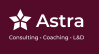
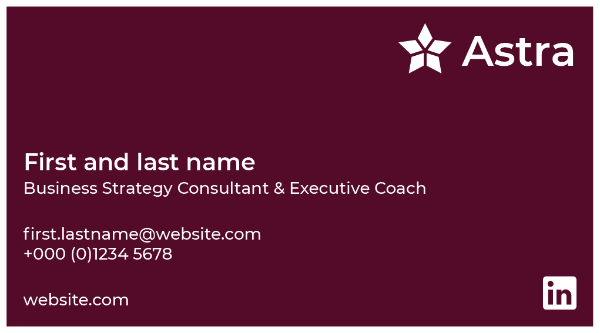
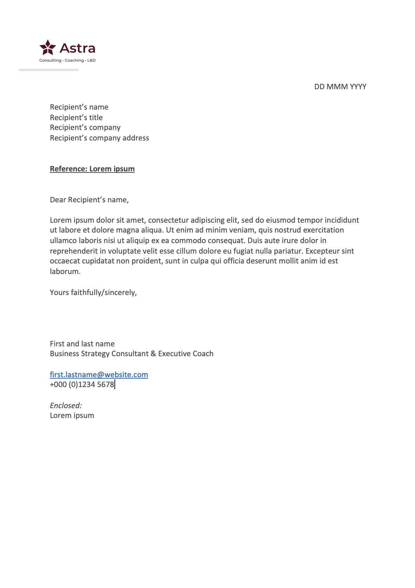
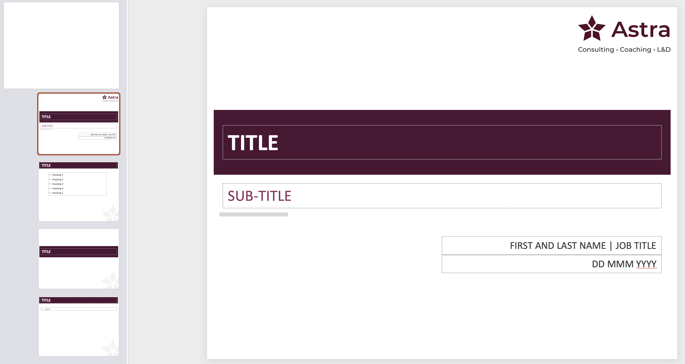
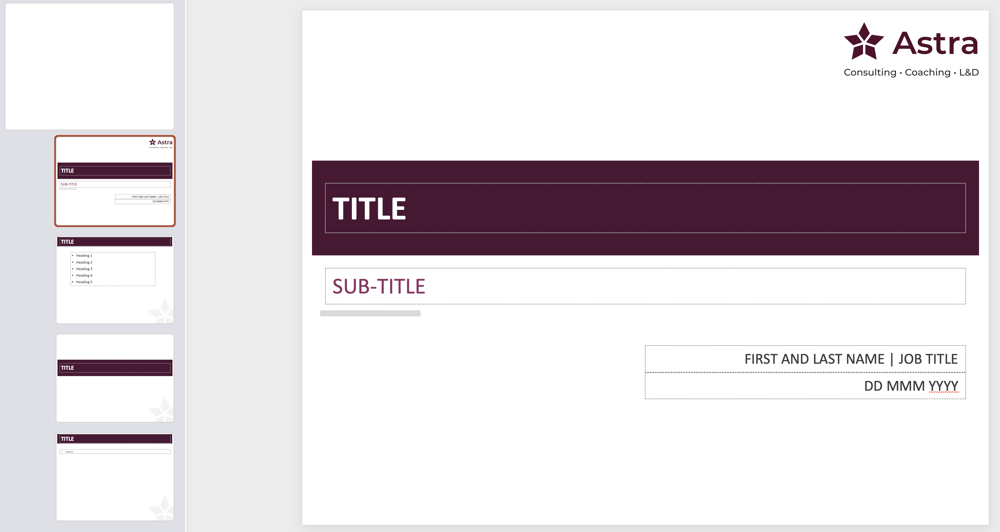
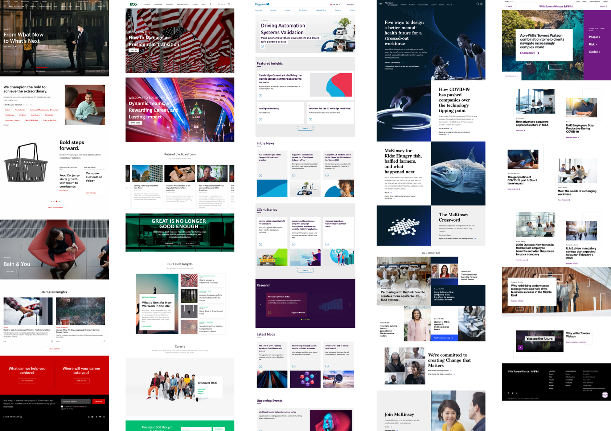
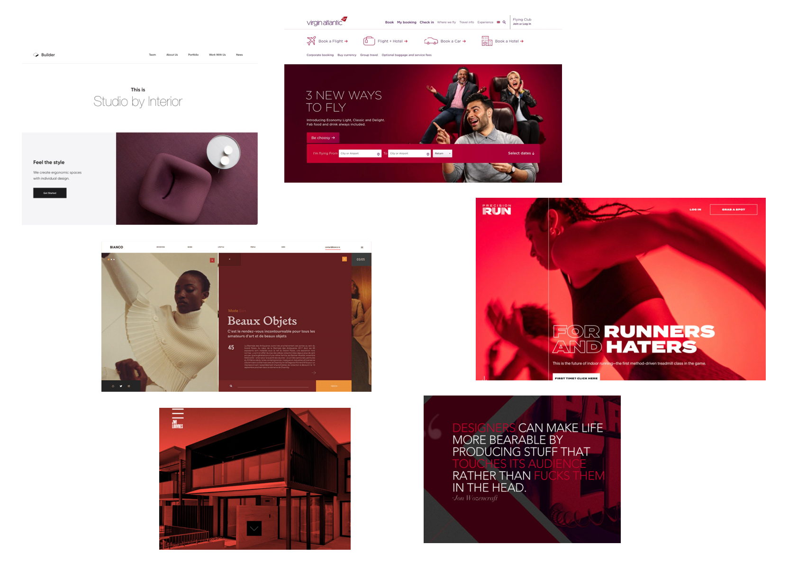
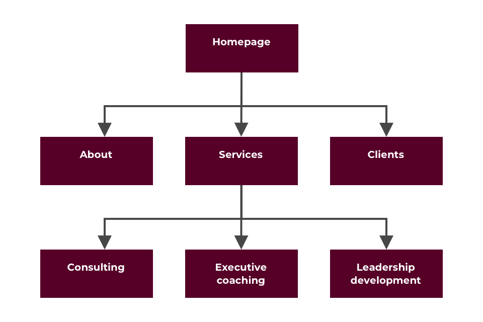

1. Brand identity
Summary
- Brainstormed with the client on brand identity
- Decided on the typography and colour palette
- Designed logo using idea generation, sketching and vectorising
1.1 Identity
Brainstormed with the client words that resonates with her business. At the end of the session, the client settled with ‘modern’ and ‘smart’ which ultimately underpins this project.
1.2 Typography
Recommended ‘Montserrat’ for the typography as its widely used and modern; the client agreed.
1.3 Color
The client already had something in mind for the colour palette – burgundy as the primary and slate grey for the secondary colour.
1.4 Business name and strapline
The business name is simply 'Astra' and for the strapline, the client wanted to include all three aspects of her business. As the strapline is not as prominent as the business name, the secondary colour was used.
1.5 Icon
Astra in Latin means ‘star’ which provided inspiration for the logo design. Google images was used to research into different star designs and ensure the design avoided negative or religious connotations e.g., Star of David. The main component of the design is the ‘star’ icon and through sketching, 12 different icons were created. The client finally decided on a simple and clean block design for the star icon.
Final outcomes
2. Business stationery
Summary
- Discussed business stationery requirements with the client
- Designed a business card, word template and PowerPoint template
2.1 Business card
The process of idea generation to vectorising was used when designing the business card. Sizing and language requirements were taken into consideration since the client is based in Qatar.
2.2 Word template
The standard letter format was used since the client is in the professional domain. Different designs were presented to the client and the final version is illustrated below.
2.3 PowerPoint template
The client already used a pre-made template from Powerpoint for her existing business. Therefore, this template was manipulated to adhere to the new branding.
 

3. Website design
Summary
- Designed the website using a user centred design approach
- Brainstormed with the client using moodboards
- Developed a sitemap based on content requirements from the client
- Developed low fidelity wireframes on paper and pen and high fidelity on Sketch
3.1 Moodboards
To kick off the web design process, different moodboards were created including websites from HR consultancy businesses, light and dark website designs as well as one related to her primary colour. The client remarked that she likes large images on websites.
3.2 Sitemap
The sitemap was developed from content provided by the client as well as referring to other consultancy websites.
3.3 Low fidelity wireframes
Low fidelity wireframes were created using paper and pencil.
3.4 High fidelity wireframes
High fidelity wireframes were created using Sketch.